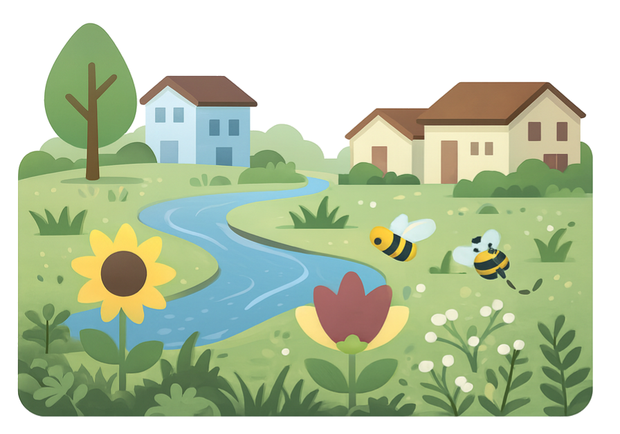
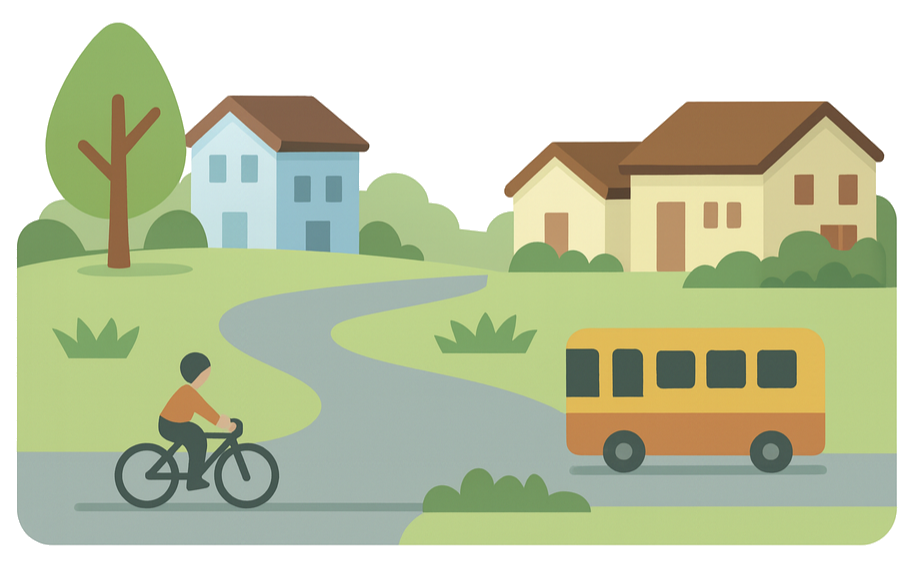
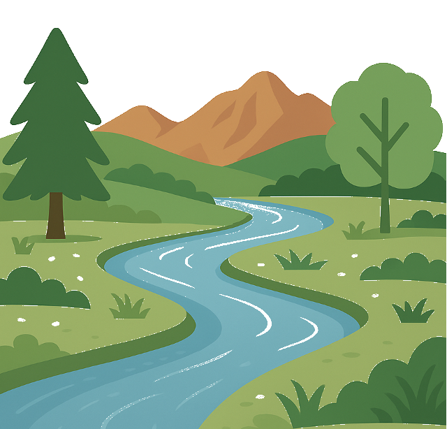
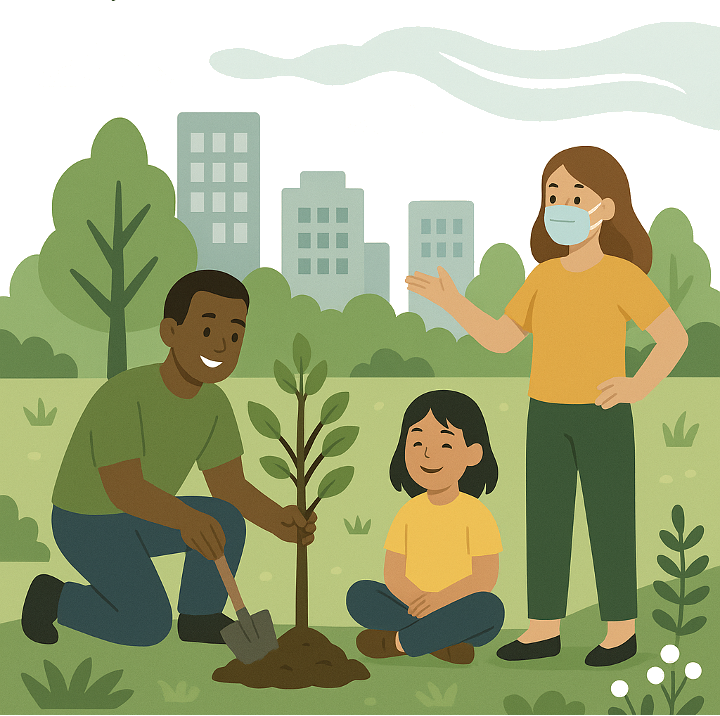
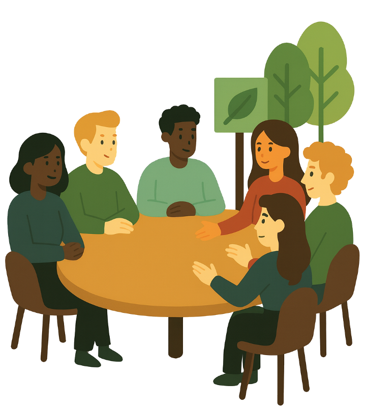

Our projects blend policy advocacy, public education, and on-the-ground activation to protect habitat, restore waters, and expand equitable access to nature.

Nature in the City
Promote urban planning and land use patterns that provide habitat and access to nature in all neighborhoods, regardless of socioeconomics.
Enable ecological protection outside urban cores, support wildlife habitat, native plant cover, pollinator gardens, bird collision mitigation, and lights-out initiatives.

Climate-Smart Land Use
Support gentle, strategic density and transit-oriented development to enable walkability and bikeability and reduce sprawl, emissions, and municipal water use.
Create green space and agricultural areas within city limits to cut impervious surface, increase carbon sequestration, and cool the urban microclimate.

Riverscape Health
Restore Poudre River habitats and water quality by maintaining baseflows, promoting watershed-scale restoration, and partnering with watershed organizations.
Advocate for sustainable and responsible use of local water resources under increasing regional climate challenges.

Environmental Equity
Address affordability-related exclusivity in Fort Collins through climate-smart land use and improve environmental equity via urban forestry and Nature in the City.
Advance equitable air quality programs and hazard mitigation so all residents can thrive.
Civic Engagement
Provide training and education on civic processes to prepare the next generation of environmental advocates.
Develop leaders ready to serve in local government and environmental organizations across Northern Colorado.

Coalition Building
Partner with local advocacy groups to organize events, provide public education, and advance progressive policy positions.
Build a broad, informed coalition that can mobilize around key issues and foster community among members.

Join the conversation
Updates on watershed restoration, climate-smart land use, advocacy trainings, and community events—all built on transparent, collaborative values.
Substack
Deeper dives into climate-smart land use, rivers, and environmental equity.
Facebook
Community updates, event invites, and quick calls to action for FoCo neighbors.
Community Slack
Connect with neighbors, co-design projects, and organize rapid response advocacy.